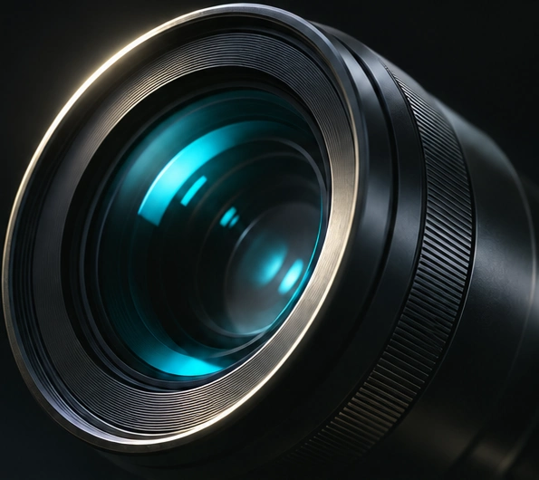

↓ Scroll into the session
Sample session
Parked vehicle
Drowsiness observedSustained eye closure · 2 s
â…¡ Monitoring pausedCamera view became obstructed.
RAFIQ AgentParked vehicle · Sample data
Session review
What happened in my session?
Parked session / Event timeline
StartEnd
00:08 · WarningDrowsiness observed
Eyes closed for 2 seconds.
Personal trends
Has this happened before?
Eye-closure warnings by session
Two of three sessions.
This session recorded one eye-closure warning at 00:08.
Evidence-backed report
Can you put that in a report?
Private report / ExcerptOne warning. One pause.
Eye closure lasted 2 seconds. Later, an obstructed view paused monitoring.